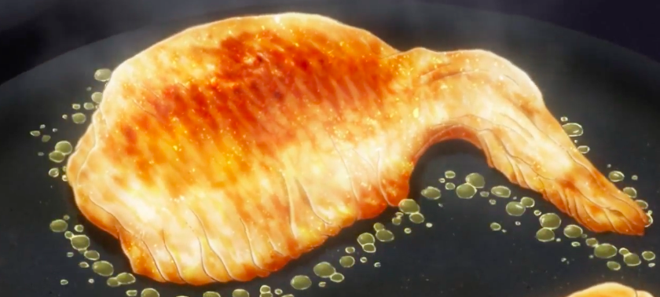

Wings

Description
A simple dish that will take less than 40 minutes to make.
Ingredients
- 1/2 cup all-purpose flour
- 1/4 teaspoon ground paprika
- 1/4 teaspoon cayenne pepper
- 1/4 teaspoon salt
- 10 chicken wings
- 2 cups vegetable oil for for frying, or as needed
- 1/4 cup butter
- 1/4 cup hot sauce
- 1 pinch ground black pepper
- 1 pinch garlic powder
Steps
- Whisk together flour, paprika, cayenne pepper, and salt in a large bowl.
- Place chicken wings in the bowl with flour mixture and toss until evenly coated.
Transfer wings to a 9x13-inch glass baking dish and arrange in a single layer.
cover and refrigerate for 1 to 1 and 1/2 hours.
- Add about 1 inch oil to a deep, heavy skillet; heat to 375 degrees F. Oil should be enough to cover wings entirely.
- Combine butter, hot sauce, pepper, and garlic powder in a separate small saucepan over low heat.
Cook and stir until butter is melted and mixture is thoroughly blended.
Remove from the heat and reserve for serving.
- Fry coated wings in the hot oil for 10 to 15 minutes, or until they begin to turn brown and crisp.
Maintain the oil temperature while cooking.
Remove cooked wings from hot oil and let it drain on a piece of paper towels or on a wire rack.